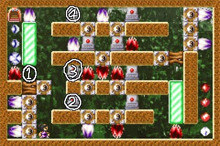
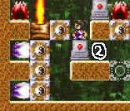
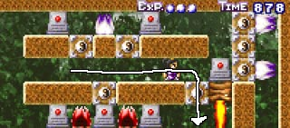
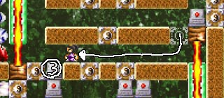
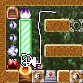

ステージ2最後の部屋です。
久しぶりにやったため、作者ですら攻略法を忘れてしまった部屋です。
|  | ２-１０ 白 この部屋の目標は、"1"の部分に |
攻略の流れ
 |
まず、"2"の位置にあるオブジェクトを |
|  | 上から２段目の通路を、 邪魔なオブジェクトを下に落としたりしつつ、 右へ移動します。 その後、ブロックを消して下の段に降ります。 |
|  | 下の段に降りたら、同じように 邪魔なオブジェクトを下に落としつつ、 左へ移動します。 "3"のオブジェクトを左に落としたら、 足場の完成です。 |
 |
"4"のオブジェクトを、矢印のとおりに動かして レーザーを遮断します。 おわり。 |
以上、クリアだけならこの方法でＯＫです。
気になるのは、経験値アイテムの存在ですね。
結論から言うと、白主人公の場合、とることが無意味なアイテムが存在します。
ステージ右下の白経験値アイテムは、上から降りてきて取るしかないため、
黒経験値アイテムを取ることになってしまいます。
また、ゴール下の３つの白経験値アイテムも、
白主人公の場合は、取っても意味がありません。
これらのアイテムは、黒主人公選択時に意味を成してくるのです…（謎